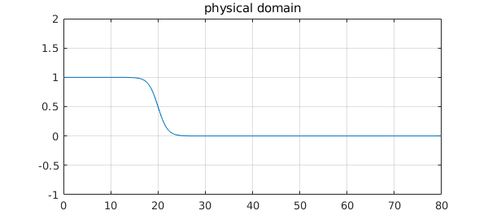
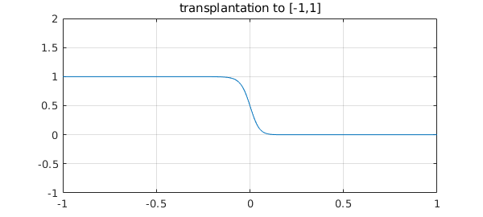
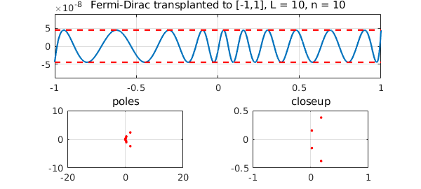
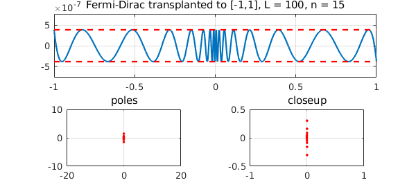
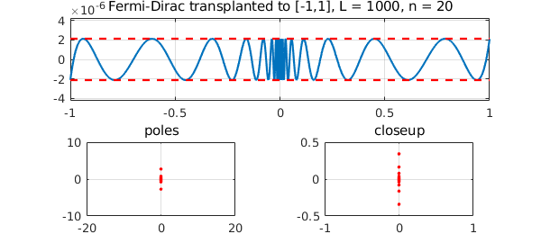

function FermiDirac
The Fermi-Dirac function is important in electronic energy calculations, for which physicists have had great success with rational approximations [1]. We won't attempt to discuss the physics or the algorithms here, but just consider some rational approximations, motivated in particular by [2].
The function is smooth, but approximates a step (which corresponds to the limit of zero temperature). With $L$ as a large parameter, we can write the function like this: $$ f(E) = {1 \over 1 + \exp(x-L) }, \quad x\in [0,\infty). $$ Here for example is a plot with $L= 20$:
tic
L = 20;
f = @(x) 1./(1+exp(x-L));
fplot(f,[0,80]), grid on, ylim([-1 2])
title('physical domain')

This is essentially a hyperbolic tangent, but with a twist: the approximation domain we care about extends a finite distance on one side and an infinite distance on the other. (Ultimately this is because a system has a minimum-energy state but no maximum.) For a type $(n,n)$ approximant, it is convenient to soften up the problem by a Möbius transformation to $s\in [-1,1]$, which maps type $(n,n)$ rational functions to themselves. The transformation is this:
x = @(s) (s*L+L)./(1-s); s = @(x) (x-L)./(x+L);
Here for example is the transplanted function above:
g = @(s) f(x(s));
dom = [-1 1];
fplot(g,dom), grid on, ylim([-1 2])
title('transplantation to [-1,1]')

Note that despite appearances, this is not symmetric about $s=0$. For example, $g(.1)$ and $1-g(-.1)$ are quite different:
disp([g(.1) 1-g(-.1)])
0.011607316445305 0.025671586349827
To approximate $g$ by a rational function of type $(n,n)$, we can use the Chebfun minimax command. (Another possibility is cf, at least for smaller values of $L$.) Here is a little code that does this.
function fermi(L,n) % minimax approx for Fermi-Dirac. Try e.g. fermi(50,10).
f = @(x) 1./(1+exp(x-L));
x = @(s) (s*L+L)./(1-s);
s = @(x) (x-L)./(x+L);
g = @(s) f(x(s));
[p,q,r,err,status] = minimax(g,n,n);
poles = status.pol;
ss = [chebpts(1000,[-1 0]); chebpts(1000,[0 1])];
subplot(2,2,1:2)
plot(ss,r(ss)-g(ss)), grid on, ylim(2*err*[-1 1]), hold on
plot([-1 1],-err*[1 1],'--r'), plot([-1 1],err*[1 1],'--r'), hold off
title(sprintf('Fermi-Dirac transplanted to [-1,1], L = %d, n = %d',L,n));
subplot(2,2,3), plot(poles,'.r')
axis equal, axis([-20 20 -10 10]), grid on, title poles
subplot(2,2,4), plot(poles,'.r')
axis equal, axis([-1 1 -.5 .5]), grid on, title closeup
end
Here is an easy example with $L=10$.
tic, fermi(10,10), toc
Elapsed time is 1.227145 seconds.

Here is a harder one with $L=100$:
tic, fermi(100,15), toc
Elapsed time is 1.727280 seconds.

The code even works with $L=1000$:
tic, fermi(1000,20), toc
Trial interpolant too far from optimal... Trying AAA-Lawson-based initialization... Elapsed time is 1.703201 seconds.

Here's the same function approximated with a higher value of $n$:
tic, fermi(1000,30), toc
Trial interpolant too far from optimal... Trying AAA-Lawson-based initialization... Elapsed time is 1.816686 seconds.

This all looks pretty satisfactory, but it would probably not be hard to break this code. An idea for improving the speed and robustness would be to adapt the idea of Moussa [2] and start the minimax barycentric Remez iteration with an initial guess derived from a Zolotarev approximation of a step.
[1] L. Lin, M. Chen, C. Yang, and L. He, Accelerating atomic orbital-based electronic structure calculation via pole expansion and selected inversion, Journal of Physics: Condensed Matter 25 (2013), 295501.
[2] J. E. Moussa, Minimax rational approximation of the Fermi-Dirac distribution, Journal of Chemical Physics 145 (2016), 164108 and arXiv:1605.03085v2, 2016.
end